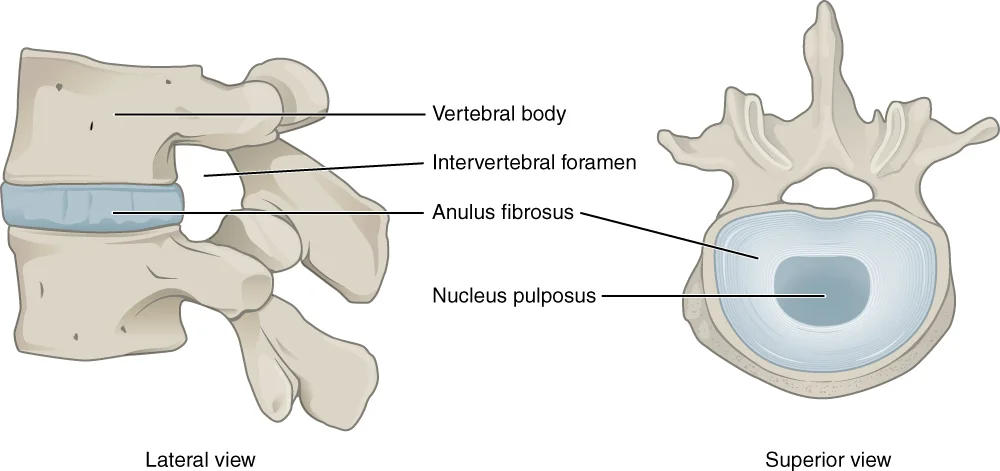
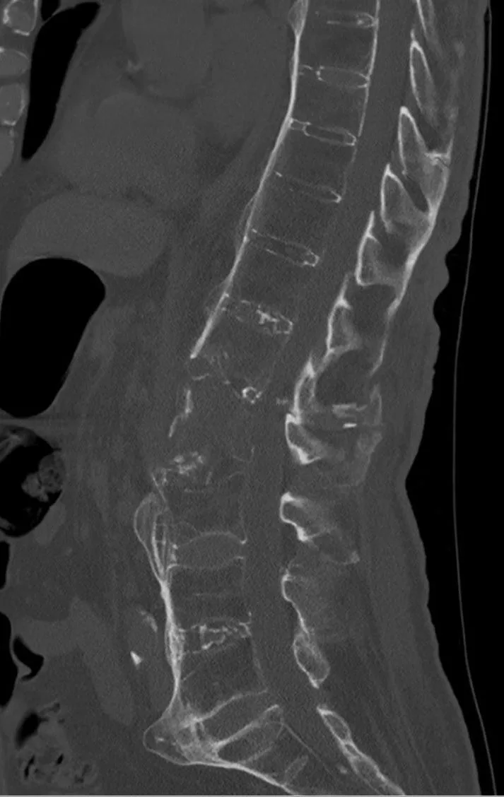
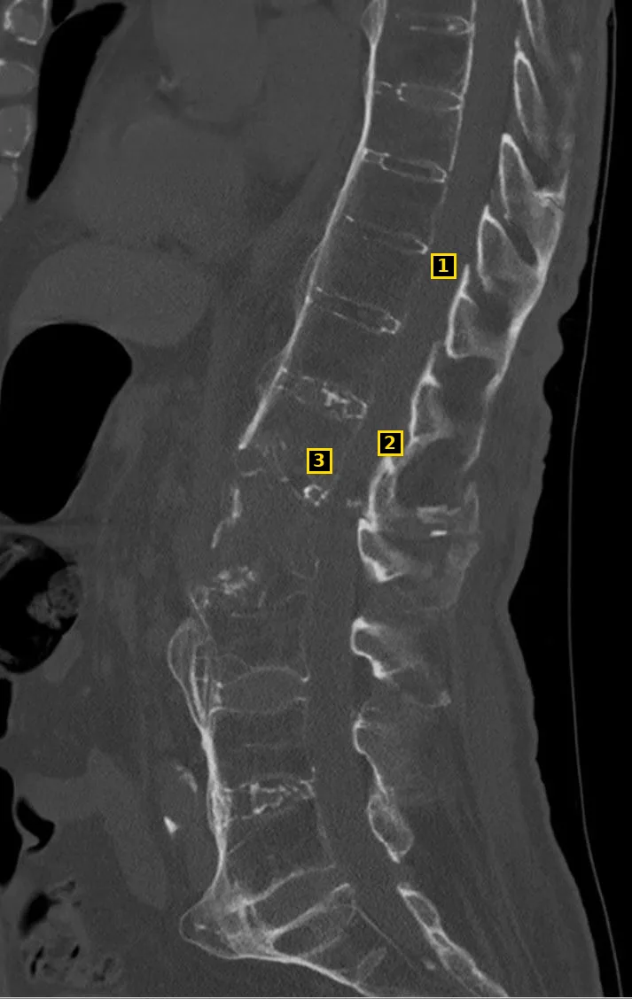

DX.4 — Fracture-luxation thoraco-lombaire
1. Définition
AO (Arbeitsgemeinschaft für Osteosynthesefragen) décrit la fracture-luxation comme la faillite de tous les éléments du segment.
Schnake indique en 2017 que le type C est une translation ou une luxation dans n'importe quel plansn17.
La même publication reste sans sous-type. Un corps déplacé suffit à la rendre hautement instablesn17.
Un corps, ou une partie de ce corps, se déplace par rapport au voisin, et le chiffre 1 désigne cette unité dans le textesn17.
La revue suisse de 2005 décrit le type C avec une composante rotatoire et indique la chirurgie des fractures-luxationsrms05.
La frontière avec la flexion-distraction tient à l'alignement, qui doit être perdu pour rester dans cette fichesn17.
Translation, rotation, alignement
Le type B garde l'axe du rachis et ne montre ni translation ni luxationsn17.
Dès qu'un décalage apparaît dans un plan, la lésion quitte la distraction et devient un type Csn17.
La composante rotatoire nommée en 2005 et la translation nommée en 2017 décrivent la même famille instablerms05sn17.
Un sous-type A ou B associé peut être codé à part, et le déplacement reste le diagnostic principalsn17.
2. Épidémiologie
Aucune incidence suisse lue ne reste disponible pour la seule fracture-luxation.
Reinhold compte 136 lésions rotatoires de type C sur 865 patients, soit 15,7 %rein.
Ce pourcentage décrit les rotations de type C, et non une seule forme de luxationrein.
Les accidents de la route représentent 27,1 % des mécanismes de la cohorte, et les chutes banales 15,8 %rein.
La jonction thoraco-lombaire représente 68,8 % des lésions de cette série, tous types confondusrein.
La méta-analyse donne une autre part, et les deux dénominateurs ne se comparent paskh16.
| Chiffre | Ce qu'il mesure | Année | Lecture |
|---|---|---|---|
| 136 lésions de type C sur 865 patients représentent 15,7 %rein. | La cohorte germanophone compte des lésions rotatoires, pas seulement des luxations évidentesrein. | Reinhold a publié cette cohorte en 2009rein. | Le type B de la même série représente 20,9 %, soit 181 dossiersrein. |
| La part des fractures-luxations de type C est de 14,20 %, avec un écart de 8,08kh16. | La méta-analyse reste un mélange de séries publiées, ostéoporose non exclue partoutkh16. | L'article est en ligne depuis 2016kh16. | La flexion-distraction y pèse 6,96 %, ce qui inverse le rapport de Reinholdkh16. |
Deux parts, deux populations
Katsuura mesure 6,90 % de fractures thoraco-lombaires chez les traumatisés fermés, écart 3,77kh16.
Dans ce corpus, le type C dépasse la flexion-distraction, à 14,20 % contre 6,96 %kh16.
Reinhold part de patients déjà porteurs d'une lésion rachidienne, et le type C y représente 15,7 %rein.
La première vertèbre lombaire représente 34,40 % des niveaux de la méta-analyse, écart 15,90kh16.
Les chutes de haute énergie représentent 31,70 % des mécanismes de cette méta-analyse, écart 6,70kh16.
Hasler, sur 250584 adultes européens, compte 9,6 % de fractures ou luxations rachidiennes sans moelletarn.
3. Physiopathologie
La base anatomo-fonctionnelle montre deux corps, un disque et un arc qui doivent tous céder.
Dans le type C, la séparation du segment est acquise, et aucun charnière postérieure ne retient le déplacementsn17.
La rotation ajoutée par la revue de 2005 fait tourner le corps en plus de le translaterrms05.
Un burst ou une distraction peuvent s'y associer, et ils se codent alors comme lésions secondairessn17.

L'image d'OpenStax, datée de 2013, montre le disque entre les corps et l'arc en arrièreimgos.
Le foramen dessiné rappelle la sortie de la racine, exposée quand les pédicules ne sont plus alignés.
Ce qui doit céder pour qu'il y ait luxation
Le disque ou le corps doit céder en avant, et l'arc ou le complexe ligamentaire doit céder en arrièresn17.
Sans ces deux ruptures, le déplacement d'un corps sur l'autre ne se constitue passn17.
Le sous-type B3 (hyperextension) garde une charnière postérieure et ne doit pas être appelé luxationsn17.
Un rachis ankylosé peut casser les trois colonnes sans que la coupe unique prouve une translation.
Rupture, image, décision
| Rupture | Image qui la montre | Décision |
|---|---|---|
| Le corps sus-jacent n'est plus au-dessus du corps sous-jacentsn17. | Le scanner sagittal ou coronal montre le décalagesn17. | La revue indique la chirurgie des fractures-luxations et des luxations vertébralesrms05. |
| La moelle ou les racines sont comprimées par le décalagerms05. | Le déficit progressif avec compression neurologique est une indication absoluerms05. | Le geste suit le contrôle des détresses, dans les 24 heures envisagées en 2024wses. |
| Le ventre peut saigner dans le même choc de haute énergietarn. | Le scanner du tronc voit le rachis et l'abdomen ensemblerms05. | L'hémostase reste prioritaire sur la visée des vis. |
4. Démarche diagnostique
Cette lésion est elle-même grave, au rang E3 de la liste gelée, et le déficit progressif passe encore devant.
Le médecin doit chercher la respiration, le pouls et le ventre avant le décalage osseuxhug.
La flexion-distraction se reconnaît à un axe conservé, et elle ne doit pas être codée icisn17.
Le burst rompt le mur postérieur sans déplacer tout le segment, et son seuil de 20 degrés ne classe pas une luxationrms05.
La table sépare les voisins, et la lésion ligamentaire pure reste hors des dixrms05.
Le cliché de la deuxième lombaire en spondylarthrite ankylosante reste un piège, pas une preuve de translationimgl2.
Voisins à ne pas confondre
| Voisin | Ce qui le sépare | Erreur fréquente | Conduite |
|---|---|---|---|
| La flexion-distraction garde l'alignement et ouvre surtout la bande postérieuresn17. | Aucun décalage de corps ne reste visible sur les reconstructionssn17. | Un écart d'épineuses sans translation ne doit pas devenir le diagnostic gelé de luxation. | Le dossier retourne vers la fiche de distraction si l'axe est conservésn17. |
| Le burst interrompt le mur postérieur et peut rétrécir le canalrms05. | Les corps restent empilés, et le fragment recule dans le canalrms05. | Le seuil de 50 % de perte de hauteur ne définit pas la luxationrms05. | La chirurgie du burst dépend de la cyphose, du canal et du déficitrms05. |
| La lésion ligamentaire pure n'a pas de trait osseux et reste hors des dixrms05. | L'os est continu et l'imagerie par résonance magnétique (IRM) montre le ligamentrms05. | La confondre avec une luxation osseuse invente un déplacement absent. | Elle reste une indication opératoire absolue dans la revue de 2005rms05. |
| La fracture des trois colonnes sur rachis ankylosé peut rester alignéesn17. | Le trait transversal existe sans marche prouvée sur une seule coupeimgl2. | Un codage en type C sans décalage visible ne doit pas forcer le diagnostic. | On décrit l'instabilité des trois colonnes et l'on cherche la translation sur d'autres planssn17. |
5. Anamnèse ciblée et drapeaux rouges
L'énergie du choc se reconstitue, chute de hauteur ou collision, avant le détail du traittarn.
Une déformation immédiate du tronc, une impotence des jambes ou une douleur abdominale orientent le lieu de soinsrms05.
L'heure du traumatisme se note, à cause du délai de 24 heures discuté pour le gestewsesrms05.
Les drapeaux décident du transport avant le sous-type radiologique.
Drapeau, sens, geste
| Drapeau | Sens | Geste |
|---|---|---|
| Le pouls dépasse 120, ou la fréquence respiratoire sort de la bande 10 à 30hug. | Une menace vitale est déjà là, hémorragie ou ventilationhug. | L'immobilisation ne doit pas retarder le geste qui sauvehug. |
| Les jambes perdent la force entre deux examensrms05. | Un déficit progressif avec compression est une indication absoluerms05. | Le chirurgien est joint pendant le scanner, pas après un avis différérms05. |
| Le tronc montre une marche ou une rotation visibles à l'œilsn17. | Le déplacement est peut-être déjà le type Csn17. | Le patient est mobilisé en bloc, sans tentative de réduction au lithug. |
| Le déficit est complet depuis le début et le reste après 24 heuresrms05. | Environ 3 % seulement des lésions complètes récupèrent dans ce délairms05. | La chirurgie d'urgence reste une option, et son bénéfice modeste vise les lésions incomplètesrms05. |
Rachis enraidi
Une spondylarthrite ankylosante connue change la manutention, et la minerve rigide peut aggraver ces patientshug.
Le protocole genevois le dit pour le rachis cervical, et la prudence de manutention vaut aussi pour un tronc enraidihug.
Le mécanisme peut être une chute basse sur un os fusionné, distinct de la ceinture de la distraction.
Le scanner sagittal cherche le trait transversal et, sur une autre coupe, un éventuel décalageimgl2.
6. Examen physique, région par région
Six régions s'examinent dans l'ordre, du tégument jusqu'au choc circulatoire.
Le normal s'énonce avant le pathologique, et chaque région a sa fenêtre.
On doit voir l'alignement du tronc et la marche médiane.
Suivent les jambes, l'abdomen, la peau et le choc.
Pour le rachis dorsal et lombaire, aucun outil validé ne doit lever l'immobilisationhug.
Un log-roll de 20 à 30 degrés permet de voir le dos, et le retournement complet reste inutilehug.
Alignement du tronc
De profil, les épaules et le bassin restent dans un axe chez le sujet indemne.
Une cassure, une rotation ou un raccourcissement du tronc montrent un déplacement de segmentsn17.
L'examen se fait sur le matelas, sans asseoir le patienthug.
La dernière côte sert de repère pour la jonction, où 68,8 % des lésions de la cohorte se situentrein.
Marche de la ligne médiane
Le doigt suit les épineuses, et l'écart régulier est le normal.
Une marche, un chevauchement ou un vide large signent le déplacement, au-delà d'un simple écart de distractionsn17.
La pression reste légère, pour ne pas aggraver un décalage.
Si le patient est inconscient, la palpation ne remplace pas le scannerhug.
Jambes et périnée
La flexion de hanche, l'extension du genou et la flexion plantaire se comparent au côté opposé.
Une force tenue contre résistance est le normal, et une chute brutale des deux côtés évoque la moelle.
Le tact et la piqûre se testent à la cuisse, à la jambe et au pied.
Un tonus anal conservé indique une lésion encore incomplète, groupe où la revue voit un bénéfice modeste de la chirurgie précocerms05.
Le score de Vaccaro indique 0 pour une neurologie intacte, 3 pour une incomplète et 2 pour une complètetlics.
La queue de cheval indique 3, au même niveau que l'incomplètetlics.
Abdomen
Le ventre se palpe après le regard, à la recherche d'une défense ou d'un météorisme.
Une chute de plus de 2 mètres augmente le risque rachidien, avec un rapport de cotes de 4,17, et le ventre partage cette énergietarn.
Le scanner du tronc, déjà utile pour le décalage, voit aussi le foie, la rate et l'intestinrms05.
Un ventre chirurgical se traite avant la fixation du rachis.
Peau et plaie
Le dos se découvre sur 20 à 30 degrés, à la recherche d'une plaie, d'une ecchymose ou d'un hématomehug.
Une plaie en regard du décalage fait craindre une ouverture, et le pansement ne retarde pas l'hémostasehug.
L'absence de plaie ne rassure pas sur l'alignement osseux.
La peau du patient ankylosé se respecte, sans appui prolongé sur une planchehug.
Souffle et pouls
Une fréquence sous 10 ou au-dessus de 30, ou un pouls au-dessus de 120, est une menace vitalehug.
L'oxygène doit passer avant la position parfaite, et le maintien manuel de la tête accompagne l'intubationhug.
Le pouls radial absent se traite comme un choc, pas comme un détail orthopédiquehug.
Le traumatisme pénétrant isolé ne s'immobilise pas, sauf déficit neurologique déjà présenthug.
7. Approche syndromique
Trois syndromes structurent la luxation : déplacement, rotation et atteinte nerveuse.
Le déplacement, la rotation et le déficit ont chacun leurs signes.
| Syndrome | Ce que le patient dit | Ce que l'on voit |
|---|---|---|
| Le déplacement se plaint d'une cassure immédiate du dossn17. | Le patient ne peut plus se tenir assis. | Une marche des épineuses ou une désaxation du tronc est visiblesn17. |
| La rotation se plaint d'un tronc tourné, parfois avec une douleur unilatéralerms05. | Le bassin et les épaules ne sont plus dans le même plan. | La composante rotatoire du type C de 2005 se reconnaît à ce décalagerms05. |
| Le déficit se plaint de jambes absentes ou d'une rétentionrms05. | La force et le tonus anal manquent ou sont asymétriques. | Le caractère complet ou incomplet à 24 heures oriente le pronosticrms05. |
Syndrome de déplacement
Le signe fonctionnel est une douleur violente et immédiate, avec impossibilité de bouger le tronc.
Le signe physique est la marche osseuse, distincte de l'écart simple des épineuses de la distractionsn17.
L'alignement perdu est le critère qui maintient le diagnostic dans le type Csn17.
Un profil presque droit doit faire revoir les reconstructions coronales avant d'exclure la translation.
Syndrome rotatoire
Le signe fonctionnel est une sensation de tronc tordu, parfois décrite par les témoins du chocrms05.
Le signe physique est la rotation des épaules sur le bassin, visible sans radiographie.
La revue de 2005 indique cette rotation dans le type C, au sommet de l'instabilitérms05.
La translation de 2017 et cette rotation décrivent la même indication chirurgicalesn17rms05.
Syndrome neurologique
Le signe fonctionnel est la perte de force, de sensation ou de miction dès le chocrms05.
Le signe physique est un niveau, des réflexes abolis ou un tonus anal diminué.
Une lésion incomplète indique 3 points dans le score de 2005, et une lésion complète en indique 2tlics.
Cette inversion se recopie telle quelle, sans la corriger de mémoiretlics.
8. Diagnostic positif et critères
Le diagnostic positif exige un déplacement d'un corps par rapport à l'autre, dans un plan quelconquesn17.
Une douleur et un mécanisme violent ne suffisent pas, sans ce décalage.
Le score de 2005 indique 3 pour la translation, et non 4 comme pour la distractiontlics.
Un complexe ligamentaire lésé indique 3, et un total de 5 ou plus oriente vers l'opérationtlics.
Un total de 3 ou moins reste non opératoire dans ce score, et un total de 4 reste indécistlics.
La revue suisse n'attend pas ce total pour une luxation vertébrale, déjà indication absoluerms05.
Points du score pour une luxation
Pour une luxation, la morphologie de compression indique 1, le burst 2, la translation 3 et la distraction 4tlics.
La fracture-luxation commence à 3, avant le ligament et la neurologietlics.
Un complexe intact indique 0, un complexe suspect indique 2 et un complexe lésé indique 3tlics.
Une neurologie intacte indique 0, une racine indique 2, la queue de cheval indique 3tlics.
Une translation indique 3 et un complexe lésé indique 3, et le seuil opératoire lu reste 5tlics.
On ne calcule pas un total absent du texte, et l'on retient que 5 ou plus est opératoiretlics.
9. Examens complémentaires
La tomodensitométrie (TDM) avec reconstructions est l'examen qui montre le décalagesn17.
La radiographie de profil peut montrer une marche, et elle ne suffit pas à exclure un déplacement coronal.
En première intention, le scanner du tronc du polytraumatisé voit le rachis et le ventrerms05.
L'image lombaire ankylosée montre un piège, et l'résonance vient en second pour la moelle.
L'imagerie par résonance magnétique (IRM) se demande si le déficit dépasse ce que l'os expliquerms05.
Elle ne retarde pas une détresse, conformément au protocole qui place l'oxygène d'abordhug.


Hellerhoff a publié le 1 mai 2015 cette fracture de la deuxième vertèbre lombaire (L2) sur un rachis ankyloséimgl2.
La légende dit que les trois colonnes sont atteintes et que la fracture est instableimgl2.
Lecture du piège, pas de la luxation
Le repère 1 est sur un corps au-dessus du trait, dans le segment enraidiimgl2.
Le repère 2 est sur le trait transversal qui coupe la colonneimgl2.
Le repère 3 est sur l'arc postérieur à la hauteur du traitimgl2.
Aucune marche chiffrée n'est affirmée sur cette seule coupe, et le type C ne se pose pas par habitudesn17.
L'auteur décrit une fracture typique de la spondylarthrite, instable, des trois colonnesimgl2.
Ce cours doit refuser un diagnostic de luxation quand le décalage n'est pas vu.
Place de l'IRM
L'IRM montre la moelle, le ligament et un hématome que le scanner osseux sous-estimerms05.
Elle vient après le contrôle vital et après le scanner qui a déjà cherché le décalagehug.
Un patient instable ne reste pas dans l'aimant au prix d'une hémorragie non traitéehug.
Le consensus de 2024 indique un geste dans les 24 heures après les détresses, pas après un bilan illimitéwses.
10. Arbre décisionnel
L'arbre décrit les menaces vitales, le décalage, le ventre et la fixation.
Chaque branche nomme un signe déjà défini plus haut.
Si le pouls dépasse 120 ou que la fréquence sort de 10 à 30, le geste vital passe devanthug.
Si les corps restent alignés, cette fiche ne s'applique pas et la distraction se discute à partsn17.
Si un décalage est vu, la luxation est une indication chirurgicale dans la revue de 2005rms05.
Si le ventre est à opérer, la laparotomie précède les vis.
Si le total de Vaccaro reste à 4, le cas est indécis et l'IRM du ligament peut aidertlics.
Si le déficit complet a dépassé 24 heures, l'urgence opératoire reste une optionrms05.
11. Prise en charge
Le but est de stopper le déplacement, de protéger la moelle restante et de traiter le ventre qui saigne.
Le consensus de 2024 indique un geste de décompression ou de fixation dans les 24 heures après les détresseswses.
La chronologie ordonne les heures, et les fiches recopient l'information professionnelle.
La fiche du paracétamol, la fiche de la morphine et la fiche de l'énoxaparine sont séparées.
La corticothérapie est hors information professionnelle suisse (AIPS), et aucun milligramme n'est écritrms05.
La revue décrit une balance vers les effets néfastes, et le consensus de 2024 refuse la haute doserms05wses.
Heure par heure
L'air et le pouls passent devant quand la fréquence est hors de 10 à 30 ou le pouls au-delà de 120hug.
Le patient voyage en bloc dans un matelas coquille, et les transferts utilisent une civière à aubehug.
Le scanner du tronc vient dès que la détresse le permet et montre le décalagerms05.
Une luxation vue sur ce scanner est une indication de la revue, après l'hémostase abdominale s'il y a lieurms05.
Le délai de 24 heures est celui du consensus, une fois les menaces vitales contrôléeswses.
Un déficit incomplet peut tirer un bénéfice modeste d'une chirurgie précocerms05.
| Molécule | Dose lue pour cette lésion | Durée | Frein majeur |
|---|---|---|---|
| Le paracétamol Stada reste indiqué dans la douleur post-traumatique légère à modéréeaips-58530. | Au-dessus de 40 kg, 500 à 1000 mg par prise, sans dépasser 4000 mgaips-58530. | L'intervalle adulte reste de 4 à 8 heuresaips-58530. | La maladie de Gilbert et l'atteinte hépatique grave contre-indiquent le produitaips-58530. |
| La morphine Bichsel traite la douleur forte quand le palier faible échoueaips-53571. | La voie sous-cutanée est de 10 mg pour 70 kg toutes les 4 à 6 heuresaips-53571. | La voie intraveineuse est de 2,5 mg toutes les 5 minutesaips-53571. | Le traumatisme crânien et l'hypertension intracrânienne contre-indiquent la morphineaips-53571. |
| L'énoxaparine Clexane prévient la thrombose de la chirurgie orthopédiqueaips-49456. | Le haut risque reçoit 40 mg une fois par jouraips-49456. | La durée moyenne est de 7 à 10 jours, plus 3 semaines en orthopédieaips-49456. | L'hémorragie active contre-indique le produit, de même que l'accident vasculaire cérébral hémorragique récentaips-49456. |
Paracétamol pour la fracture-luxation, numéro 58530
| Rubrique | Formulation propre à cette fiche |
|---|---|
| L'indication reste la douleur post-traumatique légère à modérée de cette luxationaips-58530. | Aucun autre produit du patient ne doit cacher une seconde dose de paracétamolaips-58530. |
| Au-dessus de 40 kg, la prise reste de 500 à 1000 mg et le jour de 4000 mg au plusaips-58530. | L'intervalle entre les prises reste de 4 à 8 heuresaips-58530. |
| De 30 à 40 kg, la prise reste de 400 à 600 mg et le jour de 2000 mg au plusaips-58530. | Cet intervalle d'âge correspond aux 9 à 12 ans du tableau luaips-58530. |
| De 10 à 50 ml par minute de clairance, le maximum est 3000 mg et l'intervalle 6 heuresaips-58530. | Sous 10 ml par minute, le maximum est 2000 mg et l'intervalle 8 heuresaips-58530. |
| Grossesse de cette patiente luxéeaips-58530 | La fiche recopie que le paracétamol « peut être pris ou utilisé pendant la grossesse » à la dose la plus faibleaips-58530. |
| Allaitement après cette fractureaips-58530 | La prudence reste de mise, et la phrase lue cite le nom Dafalgan dans la rubrique d'allaitementaips-58530. |
Morphine pour la fracture-luxation, numéro 53571
| Rubrique | Formulation propre à cette fiche |
|---|---|
| L'indication est la douleur aiguë forte de la luxation quand le palier faible a échouéaips-53571. | La naloxone et une ventilation restent à portée de main pendant la titrationaips-53571. |
| La dose sous-cutanée de la douleur aiguë est 10 mg par 70 kg, toutes les 4 à 6 heuresaips-53571. | Les écarts individuels vont de 5 à 20 mgaips-53571. |
| La titration intraveineuse est de 2,5 mg toutes les 5 minutes jusqu'au soulagementaips-53571. | Une charge de 5 à 15 mg en 30 minutes peut précéder 2,5 à 5 mg par heureaips-53571. |
| Le crâne traumatisé et l'hypertension intracrânienne restent des contre-indications écritesaips-53571. | La dépression respiratoire, l'iléus et l'insuffisance rénale sévère en font partieaips-53571. |
| Grossesse chez une patiente avec luxationaips-53571 | La morphine « ne doit pas être administré pendant la grossesse, sauf en cas de nécessité absolue. »aips-53571 |
| Allaitement pendant l'hospitalisation pour luxationaips-53571 | Il reste « absolument contre-indiqué d'allaiter » sous cette morphineaips-53571. |
Énoxaparine pour la fracture-luxation, numéro 49456
| Rubrique | Formulation propre à cette fiche |
|---|---|
| L'indication prophylactique écrite vise la chirurgie orthopédique et la chirurgie généraleaips-49456. | Un blessé seulement médullaire, hors des indications écrites, reste hors AIPS et sans doseaips-49456. |
| Le risque modéré reçoit 20 mg, soit 2000 unités anti-Xaaips-49456. | Le haut risque orthopédique reçoit 40 mg, première injection 12 heures avantaips-49456. |
| La durée habituelle reste de 7 à 10 joursaips-49456. | La prolongation orthopédique ajoute 40 mg pendant 3 semainesaips-49456. |
| L'hémorragie active et l'accident hémorragique cérébral récent contre-indiquent Clexaneaips-49456. | Une thrombocytopénie à l'héparine dans les 100 derniers jours contre-indique aussiaips-49456. |
| Grossesse d'une patiente opérée de luxationaips-49456 | L'anesthésie péridurale sous anticoagulant « est contre-indiquée » au moment de l'accouchementaips-49456. |
| Allaitement et flacon multiaips-49456 | L'allaitement « n'est pas recommandé », et le flacon multi « ne doit pas être utilisé chez le nouveau-né. »aips-49456 |
| Chez 8 femmes enceintes porteuses d'une valve, 1 mg par kg deux fois par jour a été suivi de caillotsaips-49456. | Le texte lu indique le décès de la mère et du fœtus après le blocage des valvesaips-49456. |
Corticoïdes hors AIPS
La méthylprednisolone est absente de l'AIPS pour la moelle de cette luxation, et aucune dose n'est proposée.
La revue de 2005 ne fournit aucun milligramme et décrit une balance vers les effets néfastesrms05.
Le consensus de 2024 indique de ne pas donner la corticothérapie à haute dose au polytraumatiséwses.
Les huit premières heures citées par la revue ne deviennent pas une ordonnancerms05.
La surveillance compare la force et la sensation à chaque relève, et une aggravation rappelle l'indication absoluerms05.
Le paracétamol doit cesser vers 4000 mg au-dessus de 40 kg, et la morphine doit cesser si la respiration chuteaips-58530aips-53571.
L'énoxaparine prophylactique doit cesser à la marche, en moyenne entre 7 et 10 jours, sauf les 3 semaines orthopédiquesaips-49456.
Le pronostic neurologique se juge à 24 heures, et environ 3 % des lésions complètes récupèrent dans ce délairms05.
La sortie du lit attend une fixation stable, et un corset ne remplace pas la chirurgie d'une luxationrms05.
Le lever précoce sur un segment encore déplacé risque d'aggraver la moelle.
Des fenêtres ajoutent le scanner, le rein, le registre et le lever.
Elles précisent la prise en charge sans changer les seuils déjà lus.
Trois plans du scanner
Sur le sagittal, le décalage se lit comme une marche entre deux plateauxsn17.
Sur le coronal, un glissement latéral peut exister alors que le profil paraît empilésn17.
Sur l'axial, les pédicules ne se superposent plus au corps sous-jacentsn17.
Après les trois plans, le compte rendu doit dire si un déplacement est vu ou non.
Chez le polytraumatisé, ce scanner du tronc montre aussi le foie, la rate et le rétropéritoinerms05.
Sans injection, l'os se juge quand même, et le saignement actif peut manquer.
Devant un rachis ankylosé, le trait transversal se cherche sur toute la hauteur du troncimgl2.
Entre deux vertèbres fusionnées, une petite solution de continuité reste une fracture instable des trois colonnesimgl2.
Rein, âge et enfant
Chez la personne âgée, la clairance de la morphine diminue et la demi-vie augmenteaips-53571.
Au-dessus de 40 kg, le paracétamol de l'adolescent de plus de 12 ans suit le plafond de 4000 mgaips-58530.
Entre 10 et 50 ml par minute, le paracétamol reste à 3000 mg et à un intervalle de 6 heuresaips-58530.
Sous 10 ml par minute, le maximum reste 2000 mg et l'intervalle reste de 8 heuresaips-58530.
De 30 à 40 kg, la prise pédiatrique reste de 400 à 600 mg, jour plafonné à 2000 mgaips-58530.
Pour le nouveau-né ventilé, la morphine est de 10 µg par kg et par heure, sans dépasser 15 µgaips-53571.
Clexane multi ne doit pas être utilisé chez le nouveau-néaips-49456.
Pendant la grossesse, le flacon multi doit être utilisé avec prudence à cause de l'alcool benzyliqueaips-49456.
Registre européen et cadre large
Hasler suit 250584 adultes de 1988 à 2009tarn.
24000 patients, soit 9,6 %, ont une fracture ou une luxation rachidienne sans moelletarn.
4489 patients, soit 1,8 %, ont une lésion médullaire dans le même registretarn.
Le segment thoracique représente 28,06 % des fractures, soit 6734 castarn.
Le segment lombaire représente 37,09 %, soit 8902 castarn.
Le comité mondial indique environ 30 fractures thoraco-lombaires pour 100,000 habitants, ostéoporose comprisewfns.
Cet accord de comité demandait 66 %, sur des articles de 2010 à 2020wfns.
Quinze études de ce corpus portent sur le traumatisme thoraco-lombaire, parmi 39 articleswfns.
Après la fixation
Au lit, la force des jambes se compare à l'examen d'arrivéerms05.
Pour un déficit incomplet, la revue décrit un bénéfice modeste de la chirurgie dans les 24 heuresrms05.
Sans fixation, un corset ne tient pas une luxation déjà déplacéerms05.
Avec la marche revenue, la prophylaxie de 40 mg peut encore durer 3 semaines en orthopédieaips-49456.
Grâce à la civière à aube, les transferts limitent le glissement du segmenthug.
Selon le protocole, la planche ne sert qu'une relève courtehug.
D'autres fenêtres suivent : nuit, erreurs, énergie et sortie.
Chacune ajoute un geste concret déjà soutenu par une source lue.
Les premières heures au lit
À l'arrivée, la force des orteils se note avant toute morphine, pour garder un repèreaips-53571.
Deux heures plus tard, la même flexion plantaire se recompare, sans changer d'examinateur si possible.
Une baisse d'un côté doit faire revoir le scanner et appeler le chirurgienrms05.
La douleur se traite, et la titration de 2,5 mg toutes les 5 minutes reste la voie intraveineuse adulteaips-53571.
Le crâne contus écarte cette morphine, contre-indication écrite de l'information professionnelleaips-53571.
Le paracétamol, lui, reste possible au-dessus de 40 kg dans la limite de 4000 mgaips-58530.
La sonde urinaire, si elle est posée, sert la diurèse et non le diagnostic du décalage.
Le matelas coquille reste en place jusqu'au lever autorisé par une fixation stablehugrms05.
Erreurs qui changent le codage
Un écart d'épineuses ne doit pas être pris pour une luxationsn17.
Un burst ne doit pas être pris pour une luxation tant que les plateaux restent empilésrms05.
Le corset de la compression, sous 20 degrés, ne doit pas être appliqué à une luxationrms05.
Un codage en type C sur le seul cliché ankylosé ne doit pas inventer un décalage absentimgl2.
Une dose de corticoïde absente de l'AIPS ne doit pas être donnée, le consensus de 2024 la refusewses.
Les 4 points de la distraction ne doivent pas être ajoutés aux 3 points de la translationtlics.
Le ventre ne doit pas être oublié pendant la discussion des visrms05.
La luxation ne doit pas être réduite au lit, hors du blochug.
Énergie du choc
Hasler indique qu'une chute de plus de 2 mètres porte un rapport de cotes de 4,17tarn.
Ce rapport concerne les lésions rachidiennes du registre, pas un sous-type unique.
Reinhold indique 27,1 % d'accidents de la route et 15,8 % de chutes banales dans sa cohorterein.
Les 136 dossiers de type C y représentent 15,7 % des 865 patientsrein.
Katsuura, en 2016, indique le type C à 14,20 % avec un écart de 8,08kh16.
La flexion-distraction n'y représente que 6,96 %, écart 3,50, sur un autre dénominateurkh16.
Le comité de 2021 indique environ 30 fractures pour 100,000 habitants, ostéoporose comprisewfns.
On ne doit pas lire ce 30 comme l'incidence de la seule luxationwfns.
Critères pour quitter le lit
La fixation doit tenir le segment, et le contrôle radiographique doit montrer des corps réalignésrms05.
La force des jambes ne doit pas avoir baissé depuis le blocrms05.
La plaie, s'il y en a une, doit être fermée ou pansée sans saignement actif.
La prophylaxie de 40 mg doit durer jusqu'à la marche, et 3 semaines s'ajoutent en chirurgie orthopédiqueaips-49456.
Le patient comprend l'interdiction de se pencher en charge tant que le chirurgien ne l'a pas levée.
Un corset de Jewett ne remplace pas cette consigne pour une luxation opéréerms05.
Environ 3 % des lésions médullaires complètes récupèrent dans les 24 premières heuresrms05.
Au-delà, la revue décrit un mauvais pronostic, et la chirurgie d'urgence n'était déjà plus une obligationrms05.
Grossesse et allaitement, cas de luxation
Chez une femme enceinte, le paracétamol peut être pris pendant la grossesse à la dose efficace la plus faibleaips-58530.
La morphine ne doit pas être administrée pendant la grossesse, sauf nécessité absolueaips-53571.
L'allaitement sous morphine reste absolument contre-indiquéaips-53571.
L'allaitement sous énoxaparine n'est pas recommandéaips-49456.
Huit femmes enceintes valvulaires ont été étudiées, et 1 mg par kg deux fois par jour a précédé des caillotsaips-49456.
Le décès de la mère et du fœtus est écrit dans l'information professionnelle, sans l'adouciraips-49456.
L'anesthésie péridurale sous anticoagulant est contre-indiquée au moment de l'accouchementaips-49456.
Le flacon multi reste interdit chez le nouveau-néaips-49456.
Ce que le compte rendu doit contenir
Le niveau du décalage se nomme par le segment, par exemple entre deux vertèbres thoraciques bassessn17.
Le plan du déplacement, sagittal ou coronal, se décrit avec les reconstructionssn17.
Une lésion du corps associée, burst ou compression, se code à côté du type Csn17.
La neurologie se cote avec les chiffres publiés, 0, 2 ou 3, sans les inversertlics.
Le complexe ligamentaire se dit intact, suspect ou lésé, soit 0, 2 ou 3tlics.
Le total se compare au seuil de 5, et le cas de 4 reste indécistlics.
L'abdomen se mentionne, exploré ou encore à explorerrms05.
L'heure du choc se note à côté de l'heure du scanner.
Conduite détaillée après le diagnostic
Dès le diagnostic de décalage, le patient reste à plat sur le matelas coquillehug.
Les transferts suivants exigent la civière à aube, pas un soulèvement par les aisselleshug.
Le log-roll, s'il est indispensable pour la peau, reste entre 20 et 30 degréshug.
Un angle plus large n'apporte pas un meilleur examen et augmente la douleurhug.
La version 1,4 du protocole genevois doit encadrer cette manutentionhug.
Le traumatisme fermé de haute énergie ne doit pas être confondu avec le traumatisme pénétrant isoléhug.
Le pénétrant isolé ne doit pas être immobilisé, sauf si un déficit neurologique est déjà constatéhug.
La luxation thoraco-lombaire du choc fermé, elle, reste immobilisée jusqu'à la fixationrms05.
Le chirurgien lit le sagittal, le coronal et l'axial avant de choisir l'abordsn17.
Un déplacement dans un seul plan suffit à maintenir le type Csn17.
La neurologie intacte indique 0, et elle ne rend pas la luxation stable pour autanttlicssn17.
Le complexe lésé indique 3, ce qui, avec la translation à 3, dépasse le seuil opératoire de 5tlics.
Le seuil de 4 reste la zone indécise, par exemple si le complexe est seulement suspecttlics.
Un complexe suspect indique 2, et la translation indique 3tlics.
La revue indique la luxation vertébrale comme absolue sans exiger ce scorerms05.
Elle indique aussi la chirurgie des lésions instables par rotationrms05.
Le bénéfice modeste de la chirurgie dans les 24 heures vise les déficits incompletsrms05.
Le déficit complet qui persiste après 24 heures a un mauvais pronostic dans le même texterms05.
Environ 3 % des lésions complètes récupèrent pendant ces 24 heuresrms05.
Ce pourcentage ne se lit pas comme la guérison habituelle d'une luxation.
L'analgésie doit commencer par le paracétamol si la douleur est légère ou modéréeaips-58530.
La prise au-dessus de 40 kg reste de 500 à 1000 mg, intervalle de 4 à 8 heuresaips-58530.
Le jour ne doit pas dépasser 4000 mg au-dessus de 40 kgaips-58530.
Entre 30 et 40 kg, le jour ne doit pas dépasser 2000 mgaips-58530.
La morphine sous-cutanée de la douleur aiguë reste de 10 mg par 70 kgaips-53571.
Les variations restent de 5 à 20 mg, toutes les 4 à 6 heuresaips-53571.
La charge intraveineuse peut être de 5 à 15 mg en 30 minutesaips-53571.
L'entretien peut suivre à 2,5 jusqu'à 5 mg par heureaips-53571.
Le nouveau-né ventilé reçoit 10 µg par kg et par heure, plafond 15 µgaips-53571.
Le nouveau-né qui respire seul ne reçoit la morphine que sous surveillance intensiveaips-53571.
L'énoxaparine à risque modéré est de 20 mg, soit 2000 unités anti-Xaaips-49456.
Le haut risque orthopédique est de 40 mg, soit 4000 unités, 12 heures avant l'interventionaips-49456.
La durée moyenne lue est de 7 à 10 joursaips-49456.
La prolongation de 3 semaines concerne la chirurgie orthopédique, en plus du traitement initialaips-49456.
Les 100 derniers jours d'une thrombocytopénie à l'héparine contre-indiquent le produitaips-49456.
L'hémorragie active reste une contre-indication du produitaips-49456.
Huit femmes enceintes avec valve cardiaque figurent dans l'étude lueaips-49456.
La dose de 1 mg par kg deux fois par jour a précédé le décès maternel et fœtalaips-49456.
Reinhold compte 733 traitements opératoires, 52 traitements non opératoires et 69 plastiesrein.
Ces effectifs décrivent toute la cohorte, pas le seul type C.
Le type A de cette cohorte représente 63,3 %, soit 548 patientsrein.
Il ne faut pas attribuer ce 63,3 % à la luxation, qui est dans les 15,7 %rein.
Hasler compte 5879 fractures cervicales, soit 24,50 % des fractures du registretarn.
Le thoracique et le lombaire, 6734 et 8902, dominent le décompte des fractures sans moelletarn.
Les lésions à plusieurs niveaux sont 2485, soit 10,35 %tarn.
La moelle cervicale représente 45,42 % des atteintes médullaires, soit 2039 castarn.
La moelle thoracique représente 29,43 %, soit 1321 cas, et la lombaire 23,81 %, soit 1069tarn.
Ces parts de moelle ne sont pas les parts morphologiques de Reinhold.
Repères pour ne pas se tromper de fiche
Devant un décalage des corps, le diagnostic reste la fracture-luxation et non la distractionsn17.
Devant un axe conservé, le diagnostic doit quitter cette fichesn17.
Après le scanner, le compte rendu doit nommer le plan du déplacementsn17.
Chez le patient ankylosé, le trait des trois colonnes ne doit pas prouver à lui seul la translationimgl2.
Sans déficit, la luxation reste hautement instable selon la publication de 2017sn17.
Avec un déficit progressif, l'indication absolue de la revue doit s'ajouter au déplacementrms05.
Pour la morphine, la voie intraveineuse de l'adulte est 2,5 mg toutes les 5 minutesaips-53571.
Sous surveillance, la charge peut aller de 5 à 15 mg en 30 minutesaips-53571.
Au-dessus de 40 kg, huit comprimés de 500 mg font le plafond de 4000 mg de paracétamolaips-58530.
Entre 9 et 12 ans, le plafond lu est 2000 mgaips-58530.
Hors des indications écrites, le blessé médullaire ne reçoit pas une dose d'énoxaparine inventéeaips-49456.
Dans la chirurgie orthopédique à haut risque, la dose lue est 40 mgaips-49456.
Grâce au consensus de 2024, la haute dose de corticoïde ne fait pas partie de l'ordonnancewses.
Selon la revue de 2005, les huit premières heures ne suffisent pas à justifier un milligramme absentrms05.
Sur 865 patients, 136 relèvent du type C rotatoirerein.
Sur la même cohorte, 181 relèvent du type B, soit 20,9 %rein.
Dans le registre européen, 1,8 % des adultes ont une lésion médullaire, soit 4489 personnestarn.
Dans ce registre, 9,6 % ont une fracture ou une luxation sans moelle, soit 24000 personnestarn.
Entre 2010 et 2020, le comité a retenu 39 articles et 15 études thoraco-lombaireswfns.
L'accord retenu pour ce comité est de 66 %wfns.
Au bloc, la luxation doit être fixée après l'hémostase, pas avantrms05.
Au réveil, la force des orteils doit être comparée à la note préopératoirerms05.
Pour le transport, le matelas coquille reste préféré à la planche prolongéehug.
Pour l'intubation, l'oxygène doit primer et la tête reste maintenue à la mainhug.
Dans le score, une racine indique 2 et la queue de cheval indique 3tlics.
Dans la même grille, une lésion complète indique 2 et une lésion incomplète indique 3tlics.
Après 24 heures d'un déficit complet, la revue décrit un mauvais pronosticrms05.
Avant ces 24 heures, environ 3 % des lésions complètes récupèrentrms05.
Chez l'adulte de plus de 40 kg, l'intervalle du paracétamol reste de 4 à 8 heuresaips-58530.
Chez l'enfant de 9 à 12 ans, l'intervalle lu est de 6 à 8 heuresaips-58530.
Sous 10 ml par minute de clairance, le paracétamol reste à 2000 mg par jouraips-58530.
De 10 à 50 ml par minute, il reste à 3000 mg par jouraips-58530.
Pour la morphine du nouveau-né ventilé, le plafond est 15 µg par kg et par heureaips-53571.
Pour le même nouveau-né, la perfusion de départ est 10 µg par kg et par heureaips-53571.
En orthopédie, la première injection de 40 mg se fait 12 heures avant l'interventionaips-49456.
En chirurgie générale à risque modéré, la dose lue est 20 mgaips-49456.
Les 181 dossiers de type B représentent 20,9 % de la cohorte de 865 patientsrein.
Les 548 dossiers de type A représentent 63,3 % de la même cohorterein.
Hasler compte 250584 adultes inclus de 1988 à 2009tarn.
Parmi eux, 2485 fractures sont étagées, soit 10,35 %tarn.
Dans la cohorte, 733 patients ont été opérés et 52 ne l'ont pas étérein.
Soixante-neuf plasties complètent ce décompte, sans devenir le traitement de la luxationrein.
Le thoracique du registre représente 28,06 % des fractures, soit 6734 castarn.
Le lombaire en représente 37,09 %, soit 8902 castarn.
Les atteintes médullaires cervicales sont 2039, soit 45,42 % des moelles du registretarn.
Les moelles thoraciques sont 1321, soit 29,43 %, et les lombaires 1069, soit 23,81 %tarn.
Une chute banale représente 15,8 % des mécanismes de Reinhold, à côté de 27,1 % de routerein.
La jonction thoraco-lombaire représente 68,8 % des lésions, tous types confondus dans Reinholdrein.
Katsuura indique 6,90 % de fractures thoraco-lombaires chez le traumatisé fermé, écart 3,77kh16.
La lésion médullaire de cette méta-analyse représente 26,56 %, écart 10,70kh16.
L'atteinte abdominale de toutes les fractures thoraco-lombaires y est de 7,63 %, écart 9,74kh16.
Ce 7,63 % ne doit pas être confondu avec le risque viscéral de la flexion-distractionkh16.
Le type C de Katsuura représente 14,20 % des morphologies, avec un écart de 8,08kh16.
La flexion-distraction de la même méta-analyse représente 6,96 %, écart 3,50kh16.
Les chutes de haute énergie y représentent 31,70 % des mécanismes, écart 6,70kh16.
Les collisions y représentent 36,70 %, écart 5,35kh16.
La première vertèbre lombaire représente 34,40 % des niveaux lésés, écart 15,90kh16.
Une fracture cervicale non contiguë est présente dans 10,49 % des cas, écart 4,17kh16.
Le burst de type A3 (burst dans cette méta-analyse) représente 39,50 % des morphologies, écart 16,30kh16.
La compression de type A1 (compression dans cette méta-analyse) en représente 33,60 %, écart 15,10kh16.
L'atteinte thoracique associée de tout traumatisme thoraco-lombaire y est de 22,64 %, écart 13,94kh16.
L'atteinte des membres y est de 18,26 %, écart 5,95kh16.
L'atteinte du bassin y est de 9,39 %, écart 6,45kh16.
L'atteinte de la tête y est de 12,96 %, écart 2,01kh16.
Le pelvis et les membres se cherchent sur le même passage au scanner du tronckh16.
Le chiffre de tête, 12,96 %, rappelle qu'un choc assez fort pour luxer le rachis peut aussi atteindre le crânekh16.
12. Prévention
La prévention primaire vise les chutes de plus de 2 mètres, dont le rapport de cotes rachidien est 4,17 dans le registre européentarn.
Ce chiffre décrit le risque de fracture ou de lésion médullaire, pas la seule luxation.
La prévention secondaire est le scanner sagittal et coronal chez tout choc à haute énergie, pour ne pas manquer un décalage coronal.
Chercher le ventre dans le même temps évite de fixer un rachis pendant qu'un saignement progresserms05.
La prévention tertiaire est la fixation de la luxation instable, indication de la revue, pour limiter le déplacement secondairerms05.
La planche dure reste brève, afin de limiter les escarres décrites par le protocole genevoishug.
13. Points clés
Le type C est une translation ou une luxation, et l'alignement conservé appartient à une autre fichesn17.
La cohorte germanophone compte 15,7 % de type C, soit 136 patients sur 865rein.
La translation indique 3 dans le score de 2005, et la distraction indique 4tlics.
Une luxation vertébrale est une indication opératoire absolue dans la revue suisse de 2005rms05.
Aucune dose de corticoïde n'est écrite, et la morphine est exclue en cas de traumatisme crânienwsesaips-53571.
14. Pièges et questions d'examen
Huit questions reprennent les confusions de type, de score, de dose et de délai.
La liste donne la réponse et la raison, et la dernière dit si la fiche suffit.
Questions de la fracture-luxation
| Question | Réponse | Raison |
|---|---|---|
| Un axe conservé avec écart des épineuses est-il une fracture-luxation sn17? | La réponse est non. L'alignement conservé reste dans le type Bsn17. | La translation dans un plan quelconque définit le type Csn17. |
| La translation cote-t-elle 4 points comme la distraction tlics? | La réponse est non. La translation indique 3 et la distraction indique 4tlics. | Le texte de 2005 sépare ces deux morphologiestlics. |
| Une cyphose sous 20 degrés autorise-t-elle le corset d'une luxation rms05? | La réponse est non. Ce seuil décrit la compression, pas la luxationrms05. | La revue indique la chirurgie des fractures-luxationsrms05. |
| Faut-il une dose de méthylprednisolone dans les huit premières heures wses? | La réponse est non. Le consensus de 2024 refuse la haute dosewses. | L'information professionnelle ne donne pas cette dose pour la moellerms05. |
| Quelle titration intraveineuse de morphine utilise-t-on chez l'adulte aips-53571? | La dose est de 2,5 mg toutes les 5 minutes, hors traumatisme crânienaips-53571. | La dose sous-cutanée de 10 mg par 70 kg est une autre voieaips-53571. |
| Ce cliché lombaire ankylosé doit-il être lu comme une luxation imgl2? | La réponse est non. La coupe montre un trait des trois colonnes sans marche affirméeimgl2. | Le type C exige un déplacement vu, pas une habitude de codagesn17. |
| La lésion ligamentaire pure est-elle cette fracture-luxation rms05? | La réponse est non. Elle reste hors des dix et sans déplacement osseuxrms05. | La revue la garde pourtant comme indication opératoire absoluerms05. |
| Cette fiche, lue avec ses fenêtres, suffit-elle aux décisions de la luxation rms05? | La réponse est oui pour le tri, le scanner, l'indication opératoire et les doses luesaips-58530. | Le cliché ankylosé est présenté comme piège, et les seuils d'un autre type ne sont pas reprisimgl2. |
Sources
- Schnake KJ, Schroeder GD, Vaccaro AR, Oner C. AOSpine Classification Systems. Journal of Orthopaedic Trauma, septembre 2017. https://journals.lww.com/jorthotrauma/fulltext/2017/09004/aospine_classification_systems__subaxial,.3.aspx
- Reinhold M et collaborateurs. Cohorte multicentrique MCS II, Unfallchirurg 2009, DOI 10.1007/s00113-008-1524-7.
- Katsuura Y, Osborn JM, Cason GW. The epidemiology of thoracolumbar trauma. Journal of Orthopaedics, 21 juillet 2016. https://www.ncbi.nlm.nih.gov/pmc/articles/PMC4963326/
- Schizas C, Mouhsine E. Revue médicale suisse, 21 décembre 2005. https://www.revmed.ch/revue-medicale-suisse/2005/revue-medicale-suisse-46/lesions-traumatiques-rachidiennes-et-indications-au-traitement-chirurgical
- Hôpitaux universitaires de Genève (HUG). Immobilisation du rachis, version 1.4, mise à jour le 4 janvier 2023. https://www.hug.ch/sites/interhug/files/structures/medecine_de_premier_recours/191220_rug_trauma_cervical.pdf
- Vaccaro AR et Lee JY. Thoracolumbar Injury Classification and Severity Score. Journal of Orthopaedic Science, 2005.
- World Society of Emergency Surgery et European Association of Neurosurgical Societies. World Journal of Emergency Surgery, 18 janvier 2024.
- Comité spinal de la World Federation of Neurosurgical Societies. Neurospine, 2021.
- Hasler RM et collaborateurs. Cohorte européenne du Trauma Audit and Research Network, 1988 à 2009.
- Paracétamol Stada, information professionnelle, mise à jour Juillet 2026, numéro 58530. https://files.refdata.ch/simis-public-prod/MedicinalDocuments/6a8ba1f855314947892cc9aa73bc49ce-fr.html
- Morphine HCl Bichsel, information professionnelle, mise à jour Février 2024, numéro 53571. https://files.refdata.ch/simis-public-prod/MedicinalDocuments/406bcf9ec9244bac9eb81a3eb70a0ced-fr.html
- Clexane, information professionnelle, mise à jour Février 2026, numéro 49456. https://files.refdata.ch/simis-public-prod/MedicinalDocuments/3b42abe606a74cccbcbd45f823b104f3-fr.html
- OpenStax College. Disque intervertébral, Anatomy and Physiology, 19 juin 2013, licence CC BY 3.0. https://commons.wikimedia.org/wiki/File:716_Intervertebral_Disk.jpg
- Hellerhoff. Fracture lombaire sur spondylarthrite ankylosante, 1 mai 2015, licence CC BY-SA 3.0. https://commons.wikimedia.org/wiki/File:Fraktur_LWK_2_bei_Morbus_Bechterew_-_CT_sag_001.jpg
Le contenu reprend les sources citées et n’a pas été validé cliniquement par un médecin.